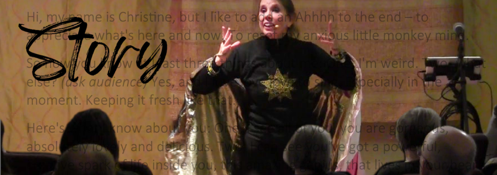
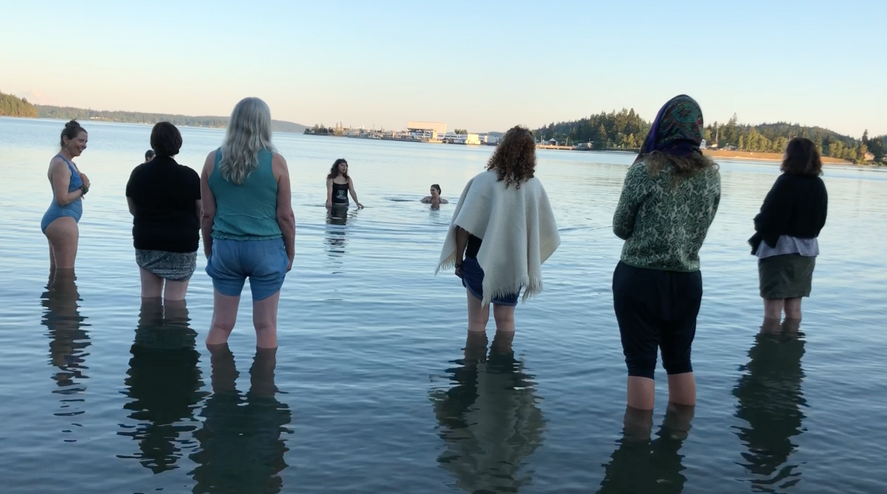

We are the stories we tell ourselves. What story wants to live through you?
Our culture's violence makes me heartsick. So I write characters who learn to meet conflict with compassion — to melt fear with love. My novels, oracle cards, graphic novel, and one-woman show feature magical realism and fantasy elements inspired by deep writing intensives with Octavia E. Butler and Ursula K. Le Guin.
JOIN THE MUSELETTER >One-Woman Musical
A unique one-woman musical about Love versus Fear. Deep down we all want to be seen, to connect, to create, and to love. But our brains are wired for survival and fear.
This is a story of how one girl ended up with a crew of inner characters who run her ragged. Good Girl demands perfection. Hungry Girl goes after chocolate, wine, and binge-watching. All to cover up existential dread, worry, and self-doubt.
Spark Story is coming back by request in 2026!
"Your story reminded me of what I want most – to be at home, in me." ~ Isabel Belda, Buenos Aires
"Your piece really moved me, caused a definite shift. I am not the same person." ~ Amma Li Grace
Novel in Progress
"Your Soul never abandons you, even if you abandon yourself."
It's 1973. Thirteen-year-old Sam builds a rock-solid wall around her heart to escape violent chaos at home. Her dissociated Soul hovers close, relentlessly trying to reconnect as Sam spirals into drugs, sex, and danger. Can Soul break through in time to save her?
A supernatural coming-of-age story — raw, visionary, and ultimately an act of profound love.
REQUEST A PREVIEW >
Oracle Decks
Holy Sh*t! 52 Inspiring Self-Care Tools for People Who Poo — A deck of playful, practical meditations for the bathroom. Pull a card to reset your monkey mind, restore your body, release funky emotions, or revitalize your spirit.
HeartsQuest: Creative Tools to Navigate Change — An oracle for anyone in a big transition, to access inner wisdom. Get comfort and clarity for uncertainty, anxiety, and stuckness. Currently sold out.
GET A DECK >YA Fantasy Novel
When 13-year-old Yolanda looks in her mirror, she's shocked to see a boy's face instead of her own. The strange boy shows up in reflections everywhere — on the TV and even the toaster — calling her by name. When he appears in a lake under a full moon, Yolanda plunges in after him, stepping into an ancient spirit world.
She escapes with Ming, a warrior princess, and together they flee to a distant mountaintop where Yolanda unleashes her power — the vision to see the truth. But can she trust it enough to see the real boy behind the reflection?
"This fast-paced tale was un-put-downable. Highly recommended to fantasy enthusiasts."
"The characters were colorful, the plot engaging and the imagery delightful. A page turner."

A weekly museletter — stories to light the way, with heart.